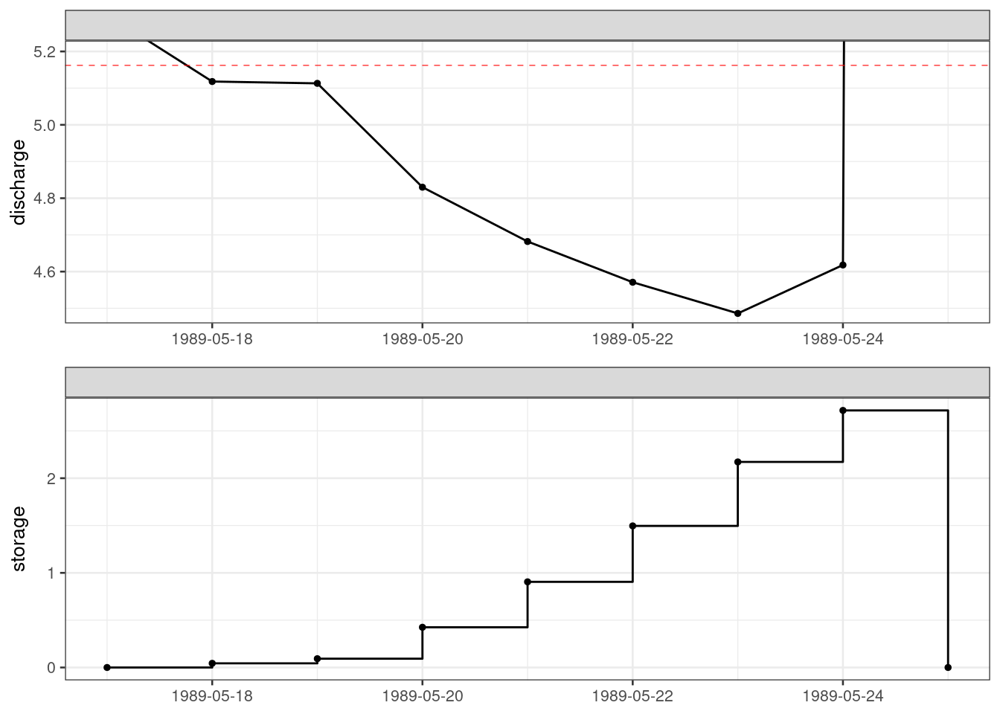

Ten years of daily data without missing values from River Ngaruroro at Kuripapango (NZ) are used as an example.
library(tidyverse)
library(hydroDrought)
ngaruroro <- international %>%
filter(river == "Ngaruroro") %>%
select(data) %>%
unnest(data) %>%
mutate(
year = water_year(time, origin = "-09-01")
) %>%
filter(year >= 1988, year <= 1999) %>%
print()## # A tibble: 4,383 x 3
## time discharge year
## <date> <dbl> <dbl>
## 1 1988-09-01 30.7 1988
## 2 1988-09-02 84.8 1988
## 3 1988-09-03 119. 1988
## 4 1988-09-04 139. 1988
## 5 1988-09-05 87.5 1988
## 6 1988-09-06 74.3 1988
## 7 1988-09-07 56.1 1988
## 8 1988-09-08 70.2 1988
## 9 1988-09-09 56.1 1988
## 10 1988-09-10 43.1 1988
## # … with 4,373 more rowsThe storage \(S_t\) is appended as new column to the time series using the function storage() with the discharges and the threshold as input values.
q90 <- lfquantile(ngaruroro$discharge, exc.freq = 0.9)
ng <- ngaruroro %>%
mutate(
storage = storage(discharge = discharge, threshold = q90)
) Table 5.9 SPA calculation of drought deficit volumes and duration for River Ngaruroro at Kuripapango (NZ)
## # A tibble: 4,383 x 4
## time discharge year storage
## <date> <dbl> <dbl> <dbl>
## 1 1988-09-01 30.7 1988 0
## 2 1988-09-02 84.8 1988 0
## 3 1988-09-03 119. 1988 0
## 4 1988-09-04 139. 1988 0
## 5 1988-09-05 87.5 1988 0
## 6 1988-09-06 74.3 1988 0
## 7 1988-09-07 56.1 1988 0
## 8 1988-09-08 70.2 1988 0
## 9 1988-09-09 56.1 1988 0
## 10 1988-09-10 43.1 1988 0
## # … with 4,373 more rowsAs long as the discharge is above the threshold the storage is zero as only flows below the \(Q_90\) contributes to the storage. The first time that is the case is on on 1989-03-14.
ng %>%
filter(storage > 0)## # A tibble: 525 x 4
## time discharge year storage
## <date> <dbl> <dbl> <dbl>
## 1 1989-03-14 5.08 1988 0.0780
## 2 1989-03-15 5.20 1988 0.0350
## 3 1989-03-23 5.05 1988 0.115
## 4 1989-03-24 4.89 1988 0.387
## 5 1989-03-25 4.88 1988 0.669
## 6 1989-03-26 5.09 1988 0.741
## 7 1989-03-27 4.80 1988 1.10
## 8 1989-03-28 4.64 1988 1.62
## 9 1989-03-29 4.55 1988 2.24
## 10 1989-03-30 5.11 1988 2.29
## # … with 515 more rowsFiltering for storage > 0 and assigning new event numbers when the time increment in the (filtered) time series suddenly changes allows us to identify series of uninterrupted sequences of positive \(S_t\).
ng <- ng %>%
filter(storage > 0) %>%
mutate(
event = group_const_change(time)
) %>%
print()## # A tibble: 525 x 5
## time discharge year storage event
## <date> <dbl> <dbl> <dbl> <dbl>
## 1 1989-03-14 5.08 1988 0.0780 1
## 2 1989-03-15 5.20 1988 0.0350 1
## 3 1989-03-23 5.05 1988 0.115 2
## 4 1989-03-24 4.89 1988 0.387 2
## 5 1989-03-25 4.88 1988 0.669 2
## 6 1989-03-26 5.09 1988 0.741 2
## 7 1989-03-27 4.80 1988 1.10 2
## 8 1989-03-28 4.64 1988 1.62 2
## 9 1989-03-29 4.55 1988 2.24 2
## 10 1989-03-30 5.11 1988 2.29 2
## # … with 515 more rowsThe deficit volume is the maximum value in an uninterrupted sequence of positive \(S_t\), and the drought duration is the time from the beginning of the depletion period to the time of the maximum depletion. The date of the maximum depletion is also displayed.
spa <- ng %>%
group_by(event) %>%
summarise(
volume = max(storage),
duration = which.max(storage),
time = time[which.max(storage)]
)Table 5.10 An extract of drought deficit volumes and durations for River Ngaruroro at Kuripapango (NZ), calculated by SPA
## # A tibble: 5 x 4
## event volume duration time
## <dbl> <dbl> <int> <date>
## 1 1 0.0780 1 1989-03-14
## 2 2 39.8 38 1989-04-29
## 3 3 2.72 7 1989-05-24
## 4 4 11.7 14 1990-03-09
## 5 5 8.26 13 1990-04-24Figure x.xx Depiction of the relationship between discharge \(Q_t\) and storage \(Q_t\) for drought event number 3.
An extract of the drought duration and deficit volumes for the 10-year series is given in the output below. Even though the SPA procedure is pooling minor and dependent droughts, the obtained time series of events still contains a number of minor drought events.
ngaruroro %>%
drought_events(threshold = q90, pooling = "sequent-peak") ## # A tibble: 41 x 8
## event first.day last.day duration dbt volume qmin tqmin
## <int> <date> <date> <drtn> <drtn> <dbl> <dbl> <date>
## 1 1 1989-03-14 1989-03-15 1 days 2 days 0.0780 5.08 1989-03-14
## 2 2 1989-03-23 1989-05-04 38 days 43 days 39.8 3.3 1989-04-29
## 3 3 1989-05-18 1989-05-24 7 days 7 days 2.72 4.49 1989-05-23
## 4 4 1990-02-24 1990-03-09 14 days 14 days 11.7 3.87 1990-03-09
## 5 5 1990-04-12 1990-04-24 13 days 13 days 8.26 4.18 1990-04-23
## 6 6 1990-12-27 1991-01-29 29 days 34 days 23.2 3.80 1991-01-14
## 7 7 1991-02-11 1991-02-17 7 days 7 days 4.86 4.09 1991-02-16
## 8 8 1991-03-30 1991-04-09 10 days 11 days 4.38 4.47 1991-04-08
## 9 9 1991-12-19 1991-12-23 5 days 5 days 0.918 4.77 1991-12-22
## 10 10 1991-12-28 1991-12-29 1 days 2 days 0.0590 5.10 1991-12-28
## # … with 31 more rows